Cloud computing for the era of brain observatories
Amazon Web Services Education: Research Seminar SeriesSeptember 30th, 2020
Ariel Rokem
Department of Psychology
eScience Institute
Follow along at:

John Kruper
Anisha Keshavan
Josh Smith
Jason Yeatman (Stanford)
Noah Simon (UW Biostats)
Eleftherios Garyfallidis (IU)

The brain
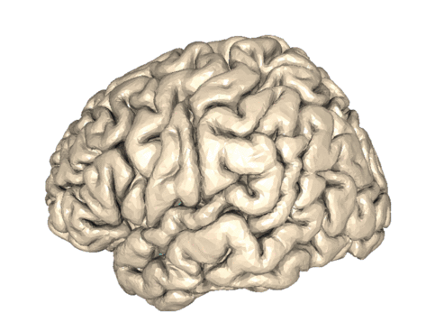The era of brain observatories
Allen Institute for Brain Science
Human Connectome Project (HCP), N = 1,200
Adolescent Brain Cognitive Development (ABCD),
N = 10,000
Healthy Brain Network (HBN), N = 10,000
UK Biobank, N = 500,000
Human Connectome Project extensions
Lifespan development
Brain aging and dementia
Alzheimer's subtypes
Anxiety and depression in teenagers
Amish Connectome (mental illness)
Low vision and blindness
Opportunities
New data sets will enable important new discoveries
Data-driven discovery
Data-driven discovery
Data aggregation and integration
Machine learning and data mining
Data visualization and communication
Insights into the brain basis of complex behaviors
Personalized medicine
Outline
Data-driven discovery in human neuroscience
Studying brain connections with diffusion MRI
Open-source software for diffusion MRI
Automated tract segmentation and tractometry
Data-driven discovery in the cloud
Cloudknot: analysis at brain-observatory scale
browser-based visualization of brain connections
Outline
Data-driven discovery in human neuroscience
Studying brain connections with diffusion MRI
Automated tract segmentation and tractometry
Open-source software for diffusion MRI
Data-driven discovery in the cloud
Cloudknot: analysis at brain-observatory scale
browser-based visualization of brain connections
Brain networks
Disconnectivity syndromes
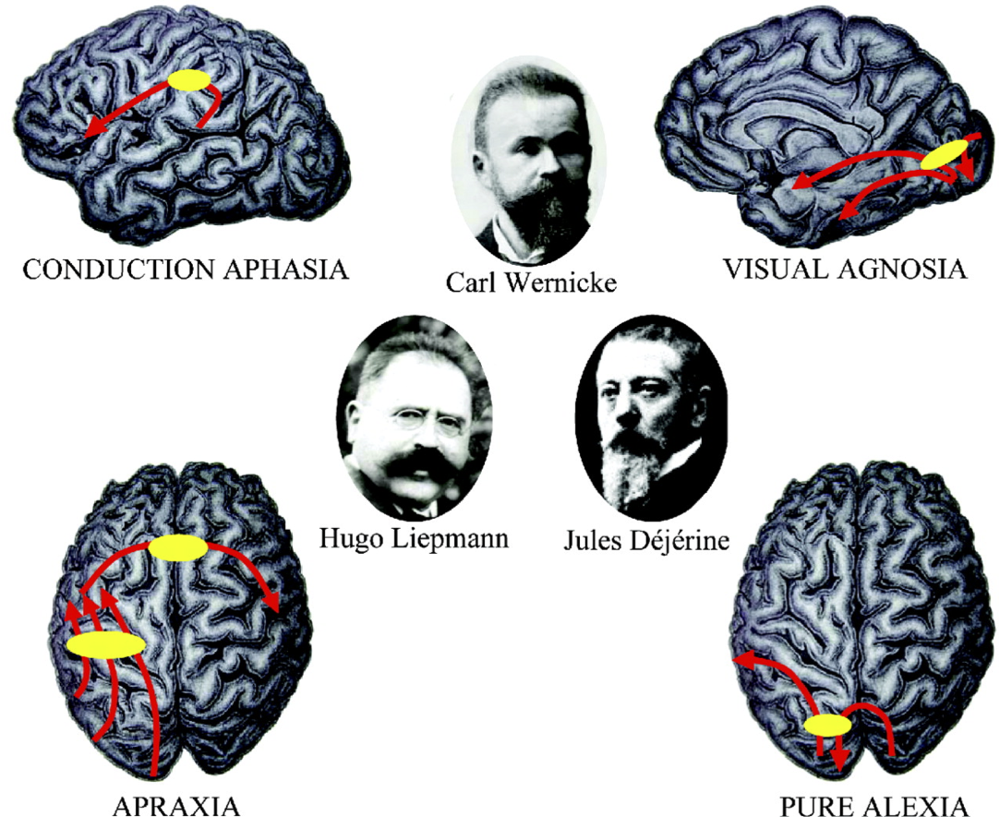Not just static cables!
Brain connections develop and mature with age
Individual differences account for differences in behaviour
Adapt and change with learning
Brain network health is important for mental health
Diffusion MRI measures the physical properties of brain connections
Diffusion MRI


Diffusion MRI
Diffusion MRI
Diffusion MRI


From diffusion to anatomy

From diffusion to anatomy

From diffusion to anatomy
From diffusion to anatomy
Outline
Data-driven discovery in human neuroscience
Studying brain connections with diffusion MRI
Automated tract segmentation and tractometry
Open-source software for diffusion MRI
Data-driven discovery in the cloud
Cloudknot: analysis at brain-observatory scale
browser-based visualization of brain connections
From diffusion to anatomy
The 3D structure of each brain is unique
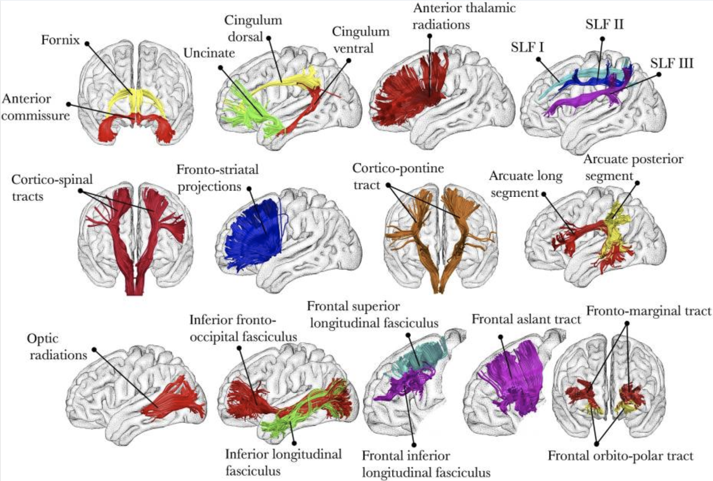Automated tract segmentation


Automated tract segmentation


Automated tract segmentation


Tractometry
The tracts are the coordinate frame for quantitative analysis

Tractometry
The tracts are the coordinate frame for quantitative analysis
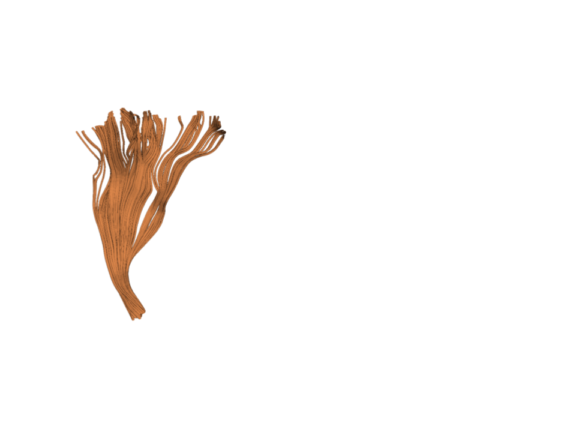Tractometry
The tracts are the coordinate frame for quantitative analysis
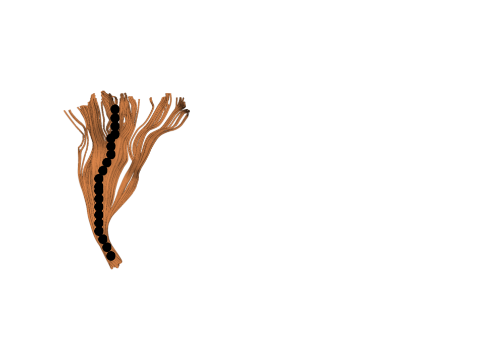Tractometry
The tracts are the coordinate frame for quantitative analysis
Tractometry
The tracts are the coordinate frame for quantitative analysis
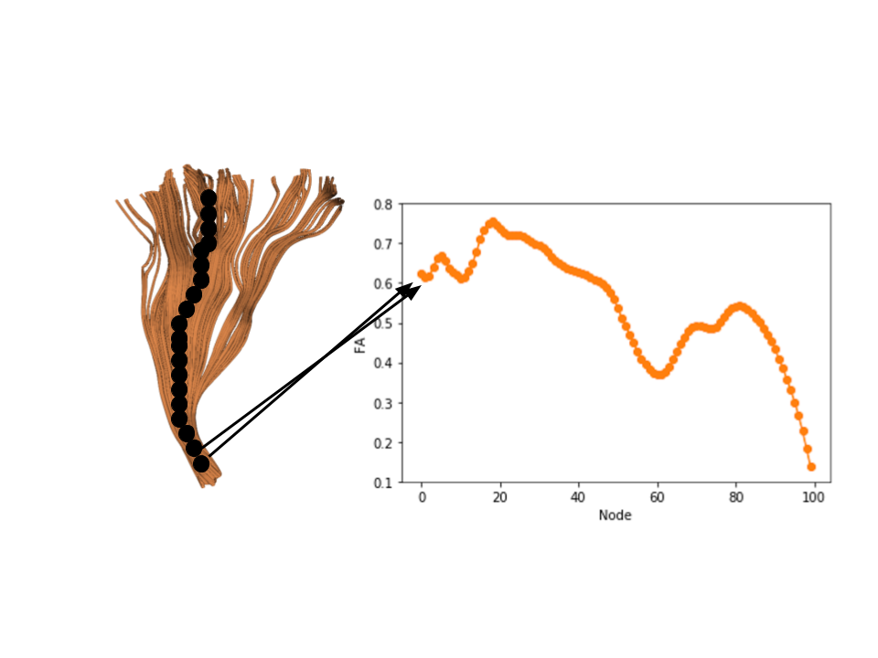Tractometry
The tracts are the coordinate frame for quantitative analysis
Tractometry
The tracts are the coordinate frame for quantitative analysis
Amyotrophic Lateral Sclerosis (ALS)
Neurodegenerative disease
Affects motor neurons
Etiology varies widely
Tractometry for group comparison
Tractometry for prediction
Patient/Control?
Accurately classifies patients/controls
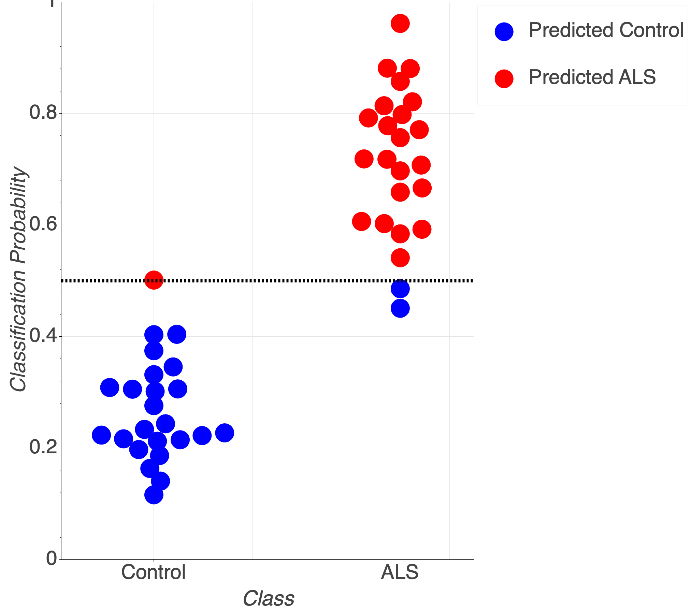Classification accuracy of 93% (+/- 2%)
AUC of 0.978 (+/- 0.01)
Outline
Data-driven discovery in human neuroscience
Studying brain connections with diffusion MRI
Automated tract segmentation and tractometry
Open-source software for diffusion MRI
Data-driven discovery in the cloud
Cloudknot: analysis at brain-observatory scale
browser-based visualization of brain connections
Open-source software for science
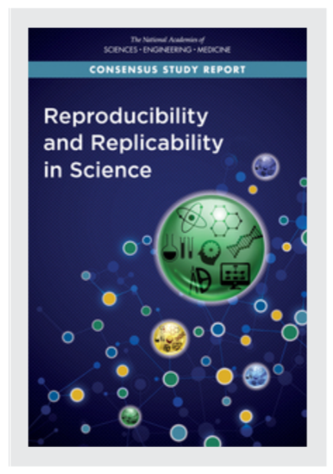
Community-developed open-source software
Open to users
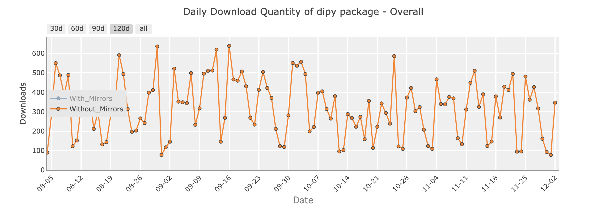Open to contributors
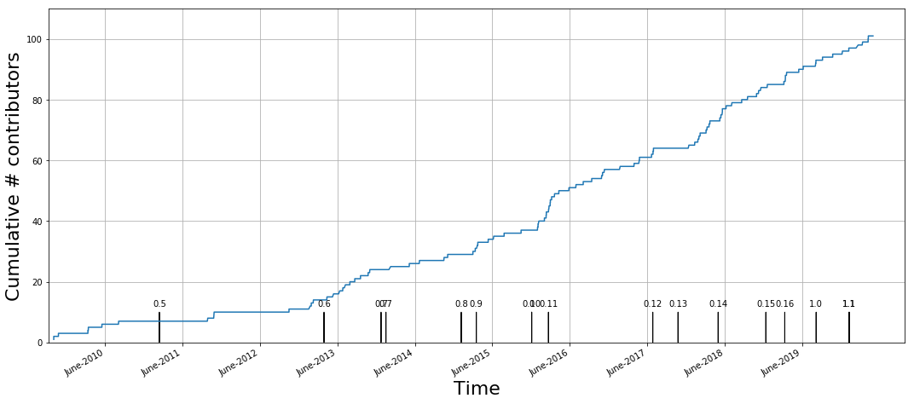Distributed collaboration
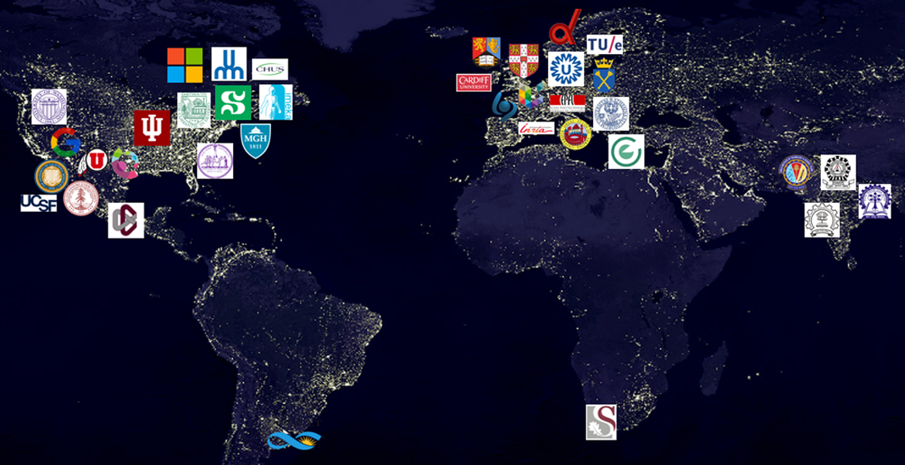Automated tract segmentation
https://autofq.orgOutline
Data-driven discovery in human neuroscience
Studying brain connections with diffusion MRI
Automated tract segmentation and tractometry
Open-source software for diffusion MRI
Data-driven discovery in the cloud
Cloudknot: analysis at brain-observatory scale
browser-based visualization of brain connections
We <3 cloud computing
Pros:
- Linear scalability
- Elasticity
- Ability to handle large datasets
Cons:
- Learning curve
- Complexity
- Cost
AWS Batch
Pros:
- Abstracts away infrastructure details
- Dynamically provisions AWS resources based on requirements of user-submitted jobs
- Allows scientists to run 100,000+ batch jobs
Cons:
- AWS Web Console resists automation
- Requires learning new terminology
- Does not easily facilitate reproducibility
AWS Batch workflow
- Build a Docker image (local machine)
- Create an Amazon ECR repository for the image (web)
- Push the build image to ECR (local machine)
- Create IAM Roles, compute environment, job queue (web)
- Create a job definition that uses the built image (web)
- Submit jobs (web)
Challenge
Reap the benefits of AWS Batch without leaving our development environment
For example: Jupyter notebook running locally on our laptop
Previous attempts
Other projects have sought to lower AWS barrier to entry
- PiCloud (2010), acquired by Dropbox in 2013
- pyWren (2017), built on AWS Lambda
- 5 minute execution time
- 1.5 GB of RAM
- 512 MB local storage
- no root access
Cloudknot
Single Program
import cloudknot as ck
def awesome_func(...):
...
knot = ck.Knot(func=awesome_func)
Multiple Data
import cloudknot as ck
def awesome_func(...):
...
knot = ck.Knot(func=awesome_func)
...
future = knot.map(args)
Compare to Dask, Myria, Spark using previous benchmark study
(Mehta et al., 2017).
Analysis of MRI data
Takeaway
- Previous MRI benchmark was performed by a team of 4 graduate students and postdocs over 6 months.
- Cloudknot implementation took Ariel one day to write
- For 25 subjects, Cloudknot was 10-25% slower
- Cloudknot favors workloads where development time is more important than execution time
Conclusion
- Cloudknot favors workloads where development time matters more than execution time.
- For many data science problems, this is an acceptable trade.
- Simplified API makes cloud computing more accessible.
import cloudknot
knot = cloudknot.Knot()
results = knot.map(sequence)
Github repo: https://github.com/nrdg/cloudknot
Documentation: https://nrdg.github.io/cloudknot/index.html
We welcome issues and contributions!
Outline
Data-driven discovery in human neuroscience
Studying brain connections with diffusion MRI
Automated tract segmentation and tractometry
Open-source software for diffusion MRI
Data-driven discovery in the cloud
Cloudknot: analysis at brain-observatory scale
browser-based visualization of brain connections
Results from large multi-dimensional datasets are hard to understand
Hard to communicate
Hard to reproduce
Solution: tools for exploration with data sharing built in!
A browser-based tool for visualization and analysis of diffusion MRI data
A web-based application
Leverages modern visualization frameworks
Builds a web-site for a diffusion MRI dataset
Automatically uploads the website to GitHub
https://yeatmanlab.github.io/Sarica_2017
Exploratory data analysis
Enhances published results
Linked visualizations facilitate easy exploration
Enables new discoveries in old datasets
Generates hypotheses for new research
Automatic data sharing

Data sharing broadens access
MRI data analysis requires specific expertise
Tract segmentation and tractometry generates data in a tidy table format (CSV)
Facilitates interdisciplinary collaboration
Outline
Data-driven discovery in human neuroscience
Studying brain connections with diffusion MRI
Automated tract segmentation and tractometry
Open-source software for diffusion MRI
Data-driven discovery in the cloud
Cloudknot: analysis at brain-observatory scale
browser-based visualization of brain connections
Thanks!
John Kruper
Anisha Keshavan
Josh Smith
Jason Yeatman (Stanford)
Noah Simon (UW Biostats)
Eleftherios Garyfallidis (IU)
Contact information